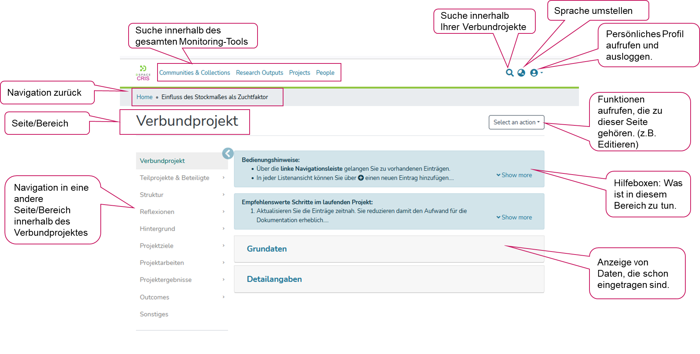

Überschrift
Dafür wurden die 17 Sustainable Development Goals (SDGs) mit ihren Unterzielen global ausgehandelt. Die Deutsche Nachhaltigkeitsstrategie (DNS) 2021 ist das demokratisch legitimierte Steuerungsinstrument zur Umsetzung der SDGs auf nationaler Ebene.
Gemäß der Leitprinzipien der DNS bedeutet nachhaltige Entwicklung
- gleichermaßen den Bedürfnissen der heutigen sowie künftiger Generationen gerecht zu werden – in Deutschland sowie in allen Teilen der Welt
- wirtschaftlich leistungsfähige, sozial ausgewogene und ökologisch verträgliche Entwicklung